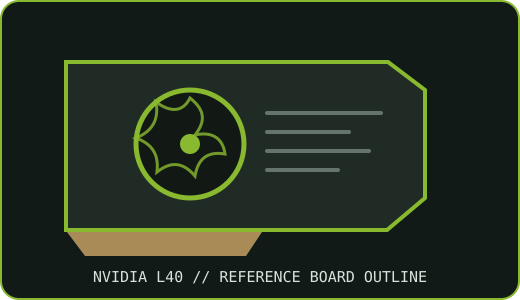

[ NVIDIA // IDENTIFIED GRAPHICS ACCELERATOR ]
NVIDIA L40 48 GB PCIe accelerator
NVIDIA Ada Lovelace; AD102 GPU. This record describes the specified PCIe product configuration, not every OEM implementation.

MODEL IDENTIFICATION: L40 PCIe reference accelerator; not L40S. Partner/system variants can differ in shroud, connector access and firmware. Match the board label, part number and revision before applying reference specifications.
Recorded specifications
| Cataloged part | NVIDIA L40 48 GB PCIe accelerator |
|---|---|
| GPU architecture / chip | AD102 (Ada Lovelace) |
| VRAM type / capacity / bus | 48 GB GDDR6 with ECC; 384-bit bus; 864 GB/s bandwidth |
| Board power / power connector | 300 W maximum board power; one 16-pin 12VHPWR auxiliary input on reference board |
| Host interface | PCIe Gen4 x16 |
| Outputs / form factor / cooling | Four DisplayPort 1.4a outputs on the L40 reference design; dual-slot full-height, full-length; passive heatsink requiring server airflow |
| Model boundary | L40 PCIe reference accelerator; not L40S. Partner/system variants can differ in shroud, connector access and firmware. |
| Archive identification | Record complete board part number, hardware revision, serial/date code, VBIOS/firmware, device/subsystem IDs, driver version, power lead and source-document revision. |
Compatibility and installation caveats
Requires a server/workstation with validated 300 W GPU power delivery and strong directed airflow. The passive card must not be treated as a self-cooled gaming board. Confirm 16-pin cable rating, seating and bend clearance. DisplayPort availability can depend on chassis and firmware configuration. Use a supported NVIDIA data-center/RTX Enterprise driver and validate OS, vGPU and CUDA requirements.
- Check the exact card manual and server qualification list for slot, power pinout, chassis clearance, airflow and firmware support before installation.
- Preserve the driver and firmware source/version used for evaluation; do not assume consumer GeForce software or an unqualified workstation supports data-center features.
- Power only a board with undamaged connectors and verified supply/cable pinout; record condition before bench testing.
Manufacturer sources
- NVIDIA L40 accelerator datasheet (reference-board specifications)Official NVIDIA technical reference for model-level configuration; compare to the exact OEM board and revision.
- NVIDIA L40 data-center product documentationNVIDIA model/product documentation and platform context; verify the actual card label and system manual.
Specifications are reference-board values unless explicitly tied to a named OEM SKU. Cable pinout, cooling and feature enablement can vary by system.